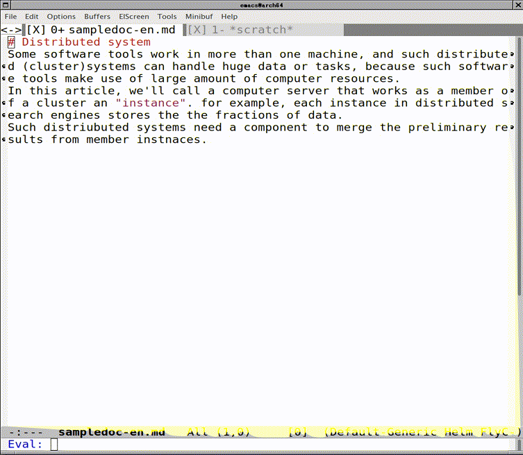

Introduce of redpen-paragraph.el
Table of Contents
1 Introduce of redpen-paragraph.el
This article is translated on the article. http://d.hatena.ne.jp/karronoli/20160512
I had the opportunity to write the manual, I had created redpen-paragraph.el as Emacs Lisp package.
karronoli/redpen-paragraph.el: RedPen interface for proofreading paragraph.
I can use better RedPen by using this. It has passed about a year since created. I have written this artcle because long-awaited.
2 Introduce of RedPen
Quoted from http://redpen.cc/
RedPen is a proofreading tool to help writers or programmers who write technical documents or manuals that need to adhere to a writing standard.
RedPen supports some input file format, Markdown, AsciiDoc and LaTex, etc. RedPen developer member correct the issues I found. GitHub If you are ArchLinux user, Try AUR (en) - redpen. if need, you can use from systemd.
3 Quick start guide
Hit the key binded redpen-paragraph on any paragraph. Hit the key with C-u to proofread a file.
(define-key global-map (kbd "C-c C-r") 'redpen-paragraph)

4 Why did I create redpen-paragraph.el?
Because I want to proofread the org-mode in Emacs, and RedPen did not correspond to the org-mode. org-mode format is not so much complexity basically.
I think I may create the practical implementation if the use of the regular expression of org-mode. But I can't follow the trivial org-mode changes. Well, a part of the file, any paragraph can be proofreaded in additon to org-mode, isn't it? (Example: source code comments)
I had created redpen-paragraph.el from the above reasons.
5 What can?
5.1 Proofread the paragraph
M-x redpen-paragraph. You request the paragraph on cursor to redpen-server, view the errors by compilation-mode. You can jump the error position if found the error. But you should set a key binding.
5.1.1 Proofread in org-mode
You can proofread the visible text ignoring the invisible text in the paragraph. To change this behavior, You customize redpen-paragraph-alist variable per major-mode.
5.2 Proofread a file
Invoke with the prefix key(C-u), You can proofread to a original file. To proofread a original file always, add the bellow line to .emacs.el.
(defvar redpen-paragraph-force-reading-whole t)
Or, You should consider using flycheck also.
5.3 Detect the languages
RedPen support English and Japanese. The input text contains ASCII and not ASCII, it switch the language of RedPen in accordance with the ratio of English and not English.
6 Caution
6.1 Demo redpen-server
The redpen-server that can be used after installation of the elisp is demo use only. It is installed to my Heroku application. You worry About security, response speed and continuity of service, You must make a server instance on somewhere.
6.2 Character count of Japanese on Emacs
Emacs counts the one character of Japanese as two characters. It can't point correct offset of the line with Japanese character by the reason. I wonder if the setting of this behavior is where…
7 Future plan
I want to make a JavaScript Extension or issues, because RedPen have Ambiguous behavior, and don't have the function I want. The plan of redpen-paragraph.el is to change to use the json2 format.